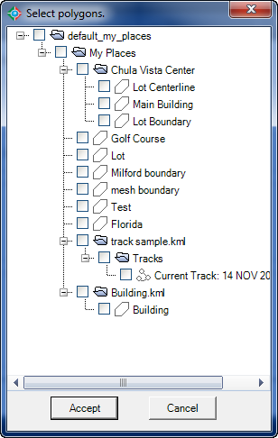

When using some CAD-Earth commands a dialog box to select the Google object to import to AutoCAD is shown:

Dialog box to select Google Earth object to import
If the Google Earth objects you intend to import to AutoCAD are not shown in the list, may be due to the following reasons:
•The object is located in the Google Earth 'Temporary Places' folder. CAD-Earth reads data from objects located in the Google Earth 'My places' folder only. To move the object from the 'Temporary Places' to the 'My Places' folder, please do the following in Google Earth:
•Right click on the Google Earth object node in the Google Earth Side Bar Places list.
•Select 'Save to My Places' from the context menu.
•Data in the 'My Places' folder is not saved to file. CAD-Earth reads data from the default Google Earth myplaces.kml file. If the data is not saved to this file, the object will not appear in the dialog box to select Google Earth objects to import. To save information to this file, select 'File > Save > Save to My Places' from the Google Earth menu and then try the CAD-Earth command again.
Alternatively, you can close Google Earth and choose to save changes so the objects created are automatically saved to the 'My Places' folder and the data in the myplaces.kml file is updated.
Google Earth will be automatically opened if some CAD-Earth commands need to show graphical information.
Copyright © 2023 Arqcom Software
Google Earth© is a registered trademark of Google inc. All other trademarks are the property of their respective owners.